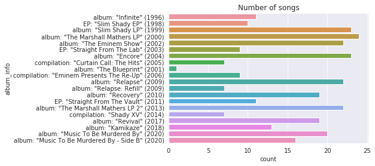
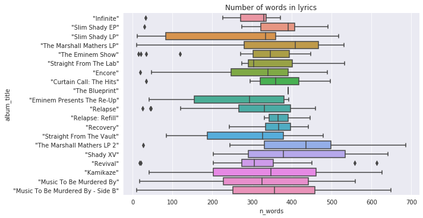
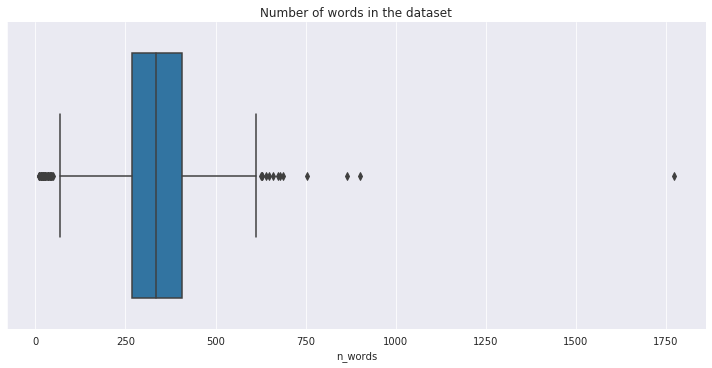
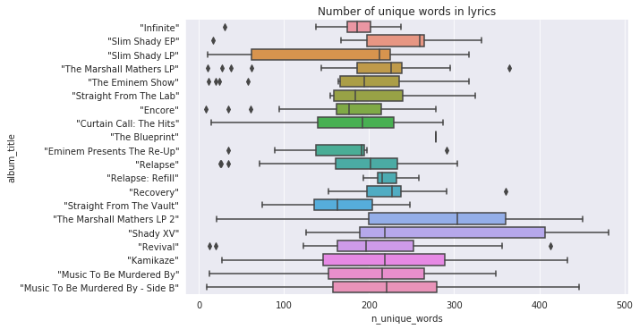
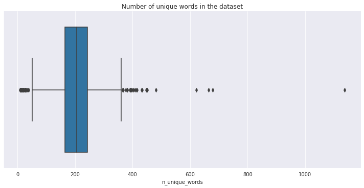
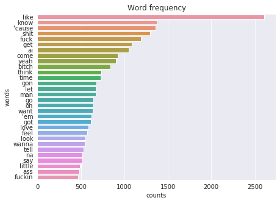
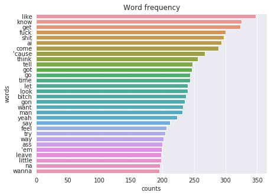
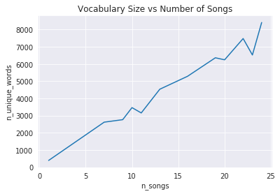

We have a script for lyrics analysis and we have analyzed the lyrics of Miley Cyrus. Let’s check Eminem. Probably rappers have a more diverse vocabulary in their creations. We can expect different statistics.
Preprocessing
I’ve obtained (details here) and preprocessed the dataset in the same way except for excluding the text inside of square brackets: now anything inside them is deleting. It helps to exclude noisy tokens such as 2x.
Number of songs
Let’s look at how many albums and songs Eminem released. 
First difference is that Eminem produced much more songs in his career (396 vs 160), but it can be explained by the length of his career. He released his first album 11 years earlier than Miley Cyrus.
word_counter = get_word_counter(lyrics_df.tokens)
print(len(word_counter), 'unique words')
> 12792 unique words
Remind you, in the previous dataset the vocabulary size is about 2100 unique words. In the case of Eminem this number is tremendous - 12792. That’s impressive! Let’s look at the ranges of the number of words and the number of unique words in the lyrics.
Number of words


Most of the songs consist of 200 to 400 words, which is likewise several times higher than in the Miley Cyrus example (about 70 to 130). Moreover, there is a song with more than 1700 words (maximum for Miley Cyrus is about 280 words).


Around half of the texts consist of 150 - 250 unique words. This number goes up to 500 words. There are some outliers on both sides of the chart. The maximum number of words in a lyric is about 1150. The shorter songs with less than 70 words can be explained by album-opening songs and songs featuring another artist.
Most common and rare
Let’s display the most frequent and common words (FYI, the list may contain offensive or rude words). 

On the charts above you can see the most frequent and common words (words, which are found in many poetries). Expectedly, the top list includes some swear words, but it contains know, love, want, like as well. The most frequent ones know and like - the same for Miley Cyrus. Actually these words can be excluded during preprocessing. You can also define which words are most valuable using other algorithms or metrics (e.g. TFIDF). Let’s plot one more chart:

The line plot shows the positive correlation of the variety of words in the album with the number of songs in that album. The more songs - the wider vocabulary. It says that Eminem tries to use different words in his poetries.
We have calculated some statistics in Eminem lyrics and compared the features with the lyrics of Miley Cyrus. We can’t confidently extend the findings to the entire pop and rap artists, but the results are still interesting.